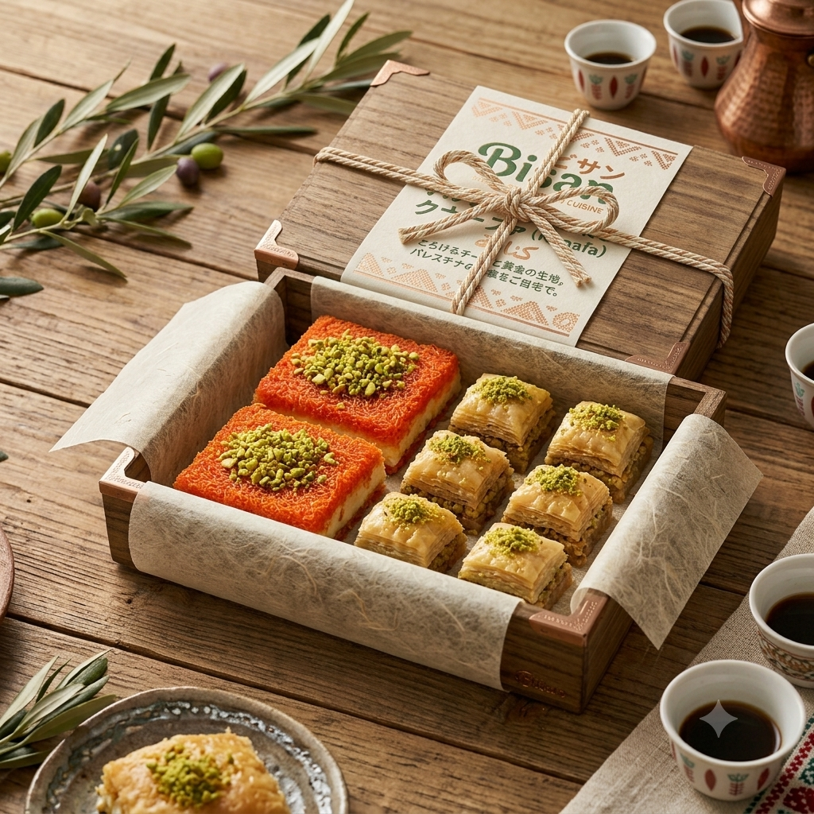

ホーム ／ パレスチナスイーツセット

数量限定
パレスチナスイーツセット
クナーファ 2個 ＋ バクラバ 6個
パレスチナを代表する二つの伝統菓子を詰め合わせた特別なセット。
クナーファは、カダイフ（細い糸状の生地）を香ばしく焼き上げ、 とろけるチーズと砂糖シロップ、ピスタチオで仕上げた黄金色のスイーツ。
バクラバは、薄いフィロ生地を何層にも重ね、 ピスタチオやクルミを挟んでシロップに浸した、芳醇な味わいの焼き菓子です。
¥—,—
税込価格・送料別（冷凍便）。価格は仮表示です。
※ ボタンは検討用モックのため動作しません。
お召し上がり方
クナーファ
- 冷蔵庫で約◯時間かけて解凍します。
- オーブン／トースターで温めると、生地が香ばしくチーズがとろけます。
- お好みで付属のシロップをかけ、温かいうちにどうぞ。
バクラバ
- 冷蔵庫で解凍後、そのままお召し上がりいただけます。
- 常温に戻すと、より芳醇な風味をお楽しみいただけます。
※ 手順・時間は仮。実際の商品仕様に合わせて確定します。
商品情報
| 商品名 | パレスチナスイーツセット（仮） |
|---|---|
| セット内容 | クナーファ 2個 / バクラバ 6個 |
| 内容量 | ◯◯g（◯〜◯人前） |
| 原材料 | 【クナーファ】小麦粉、チーズ、砂糖、ピスタチオ ほか 【バクラバ】小麦粉、ピスタチオ、砂糖、バター ほか（要確定） |
| アレルゲン | 小麦・乳・ナッツ ほか（要確定） |
| 保存方法 | 冷凍（−18℃以下）で保存 |
| 賞味期限 | 冷凍で約◯◯日（要確定） |
| 配送方法 | 冷凍便（クール便） |
| 製造者 | Bisan（要確定） |
※ 上記はすべて仮の内容です。実際の仕様は Bisan へのヒアリングで確定します。